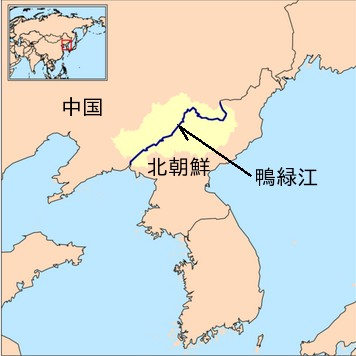
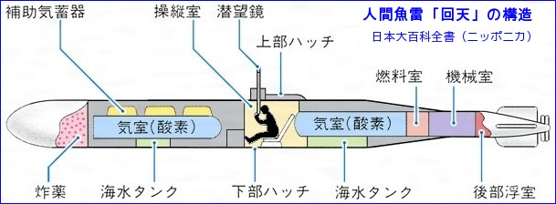
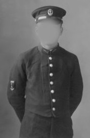

予科練の歌が流行したのは、昭和十八年、そこで始めて海軍の飛行兵の歌だと知りました。
中学三年、学徒動員で鴨緑江畔でジャンクを作っていた頃でした。

開戦以来、我国は勝利で酔い、実状は一年前にミッドウェー海戦で、致命的な敗北を喫したにも拘わらず、配属将校が「米英ごときは歯牙にも掛けない、貴様達の本当の敵はドイツである」、と叫んでいました。 手蔓(てづる)を使って昭和十九年、四年に進般しましたが、戦争も苛烈を極め、特攻隊が登場し、我々の直面する上級学校進学も、入試は廃止されて、学校の内申書で決定される様になりました。 その時になって教務主任から、「内申書は予科練か特幹を志願して、不合格になった者にしか発行しない」と通達されたのでした。
織田信長は人生五十年を謡い、我々は二十年と教えられました。 これが常識みたいなもので、とくに深刻に考えた事もありませんでした。
それで同級生達は、近限、身障、持病等、差し引いていて三十七名が志願しました。
第一次奉天(満洲)、第二次(朝鮮)の試験を経て七名が合格したが、私もその一人でした。 年の瀬も押し迫った、十二月二十日、山口県防府海軍通信学校(通称、防通校)に甲種飛行予科練習生(通称甲飛)として入校しました。
防通校は一般水兵の通信学校ですが、甲飛は進級が早く、半年で兵長ですからそこで、やっかみからか「等級泥坊」「与太連」と云われて、世評とは異なったもので戸惑いました。 しかも急造の施設で、食事は悪く少なく、生長期に常時飢餓感に悩まされ、鉄の規律と容赦しない雰囲気、特攻作戦で判明しない戦果を、我々の任務として死の直前まで送る技術を、修得する為の努力、一切の自由もなく、まるで地獄の様相でありました。
日本では陸海軍の仲が悪く、徴兵権は陸軍が優位に立っていた。 各自が技能を分担しなければならない海軍では、人材の供給先として予科連を利用しました。 特に甲飛は軍事教練を受けていて、即戦力としては有難い存在だったと思われます。
此の恰好良いと言われる服装は、外見だけを目的としたとしか考えられない、要するにファッション向きの軍服で実用性に欠けたものでした。 胴長短足の当時の日本人では、折角のスマートさも発揮できなかったと思います。
先ず上衣はチョッキと同じぐらいの丈で、ぼたんが七つ狭い間隔で着いていて急ぐ時には大変です。 ズボンは胴が長く、短い上衣を補う為ですが、ズボン吊りが必要です。 この服装は欧米でボーイの姿に良く似ていると思います。
軍歌は意識を鼓舞するため、行軍の際などに歌われますが、「若鷲の歌」とも呼ばれた此の歌は、リズムが合わず、流行歌と言うのが妥当と思います。
此の歌と、中等学校への圧力、燃料と航空機の不足で必要の無い飛行兵の名称で募集したのです。
当事、東条首相が国民に対し「精神力は無限の戦力である」と述べています。
甲飛は約十五万名、各地に入隊していて訓線を受けていますが、主として海軍航空隊と学校、変った所として、宝塚少女歌劇団の宿舎、天理教信者宿泊所、高野山坊宿舎、等々全国二十六個所で行はれました。
飛行機乗りを夢見て、壕掘りや陣地の構築に従事したが、次々特攻兵器が考案されて、生産されました。
それは次ぎの様なものでした。
一、回天・・(人間魚雪)

二、蚊龍・・(豆潜水艦)
三、震洋・・(爆装のモーターボート)
四、海龍・・(超小型潜水艦)
五、伏龍・・(爆装したグライダー)
六、桜花・・(人間爆弾)
七、特二・・(水陸両用戦車)
翼なき甲飛は、これらの特攻兵器の搭乗に志願しました。
特攻要員以外は、全員陸戦隊員として配属され、日本刀を持つ者は切り込み隊員に、その他は銃剣突撃に配置されたりして、消耗品としての悲哀を感じていました。
我々防通校組は、昭和二十年六月、通信技術を修得した者のみ卒業しました。 その際校長より「特攻隊へ入隊希望者三歩前へ」の号令が、かかり全員前進しました。
それから戦果を期待して、疎開を兼ねて出撃の燃料を稼ぐ為か、中国山脈の山村に各十名づつ松根油作業所に派遣されました。 作業所の設備は原始的で乾留釜は鉄ですが、冷却用パイプは竹筒で性能が悪く、末期症状で老人と娘さんの職場でしたが、無いない尽しで気の毒でした。
八月十五日、敗戦の報は松根油作業所で聞きました。 生き延びたと考えましたが、マインドコントロールが、かかっていたのか嬉しさも感じず、それから戦後の特攻隊と言われた、瀬戸内海の掃海艇に乗り組み、昭和二十二年秋まで掃海終了と同時に復員しました。
予科練の制服
七つボタンの制服で知られている予科練生の制服は、当初は一般の海軍兵と同じ水兵服、いわゆるジョンベラでした。
しかし、海軍の処遇に対して不満を持った予科練生が、出身校に「実態が違う、後輩を予科練に送らぬように」と計画したことで、事態を重視した海軍当局が予科練生の希望が多かった七つボタンの制服を認めることにしました。
七つボタンは世界の七大洋を著したのもので、海を越えて大空を駆け巡る、大いなる期待が込められています。 また、海軍の艦隊勤務を表す「月月火水木金金」(休日は無)の訓練をも表しています。
『若鷲の歌』では「若い血潮の予科練の七つボタンは桜に錨・・・」と歌われたことから、七つボタンの制服は予科練の代名詞となりました。
海軍の要人を育てる海軍兵学校の旧制服に似たスタイルは、当時の少年たちの心をつかみ、予科練に憧れ志願した少年も多かったそうです。引用: 予科練平和記念館予科練平和記念館ブログ
若鷲の歌（わかわしのうた）
（予科練の歌）
作詞：西條 八十 ／ 作曲：古関裕而若い血潮の 予科練の
七つボタンは 桜に錨(いかり)
今日も飛ぶ飛ぶ 霞ヶ浦にゃ
でっかい希望の 雲が湧く燃える元気な 予科練の
腕はくろがね 心は火玉
さっと巣立てば 荒海越えて
行くぞ敵陣 なぐり込み引用: 西條 八十『若鷲の歌』一番・二番の歌詞